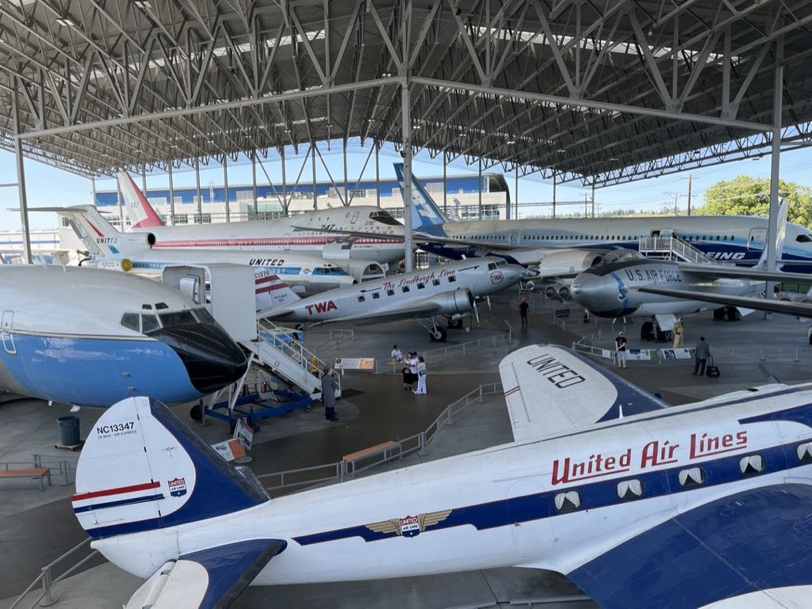

美国出差日记 - 6月
加州（和附近）各个城市有许多博物和适合孩子参观的科学馆和水族馆，另外就是trail特别多。
Seattle:
- Children Science Museum
- Pacific science center
- Seattle Aquarium
Bay Area:
- Monterey Aquarium
- SF Exploratorium
5.30 - 6.2 上班。6.2这天晚上坐差不多7:30的飞机到西雅图，大约是9:50下飞机，到Hotel差不都是10:30了。
6.3 - 6.4 在西雅图转转，行程安排大概是这样的
6.3
晚上打车到酒店 WoodSpring Suites Seattle Redmond
5.30 起床早附近看看，发现有个FredMeyer超市但是6点开门，又在附近找到了个SafeWay买了点吃的。
7点打车出发到Kerry Park. 就是看个全景，完了之后就下山。
下山走到了Pike Place Market，简单转了下，看了下第一家星巴克。后来听导游说，第一家星巴克已经被拆除了，这个其实是第二家星巴克。
继续走路到了Space Needle，这个和天津的天塔很像。这个东西是为了1962年世博会修建的，到现在50年了，还保养的很好。1个小时旋转一圈，然后脚下面还是透明玻璃。
在Space Needle 10点进去12点出来，在我附近大型商场吃了点东西，好像这天还是菲律宾的什么节日，在里面还在办表演会。然后在附近的Park休息一下到2点。
吃完了本来想做monorail到westlake center转车做light rail, 结果到了weatlake center居然停运了。然后打车到了UW。华大的同学看上去也是比较左的，这个要是放在国内就是寻衅滋事罪了。相关信息放在这里
- F**K GW! Call Cauce for Climate Action. linktree/xruw
- Cauce: https://www.washington.edu/president/ 2015年被提名为UW校长
- linktree/xruw: https://linktr.ee/xruw
差不多3点左右到的UW，逛到了差不多5点，去和yulei吃了顿饭。完了载我去MS Campus拍了张照片，接着就回酒店了。
6.4
早上7点左右起来，打车到市中心的Caffe Vita，抱团去附近搞个徒步。团是早上8点出发，时间大约4个小时。Visit Snoqualmie Falls and Hike to Twin Falls https://www.viator.com/tours/Seattle/Enjoy-the-Multnomah-Falls-at-over-500/d704-87195P3
12.30 回到了出发的Caffe Vita，然后给自己加了一个行程是西雅图地下之旅 Underneath the Street. 整个旅程差不多1个小时，但是我觉得只有对美国文化比较了解/感兴趣并且英语听力特别好的人才建议去， 反正我是感觉没有太多收获。据说附近的Jackson Street是Jazz的发源地，Jimi Hendrix最初也是在这里表演了。
差不过2.30从Pioneer Square(先锋广场)打车去The Museum of Flight。这个地方很大，算是波音的总部吧，里面有收集了各种Boeing生产的机器。此外还有好几个主题展厅：太空之旅比如土星5号以及阿波罗计划，二战主题展厅，太空飞船展厅等等。我在里面看了大约2个小时，感觉还是有点走马观花。如果想仔细看的话，我估计可以带上4-5个小时。

5点左右出发去机场，西雅图安检比较快，在里面等待了差不多1个小时就登机了。
6.5 - 6.9 上班
6.10 - 6.11 加班
6.12 - 6.13 上班
6.14 滚回家了。